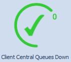
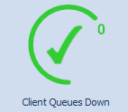
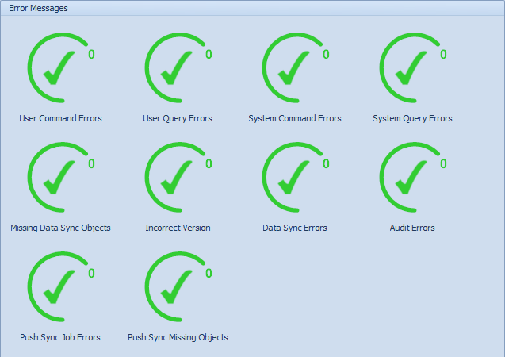

Central Client Dashboard Overview
The Conductor4SQL Dashboard is an easy to read, single page of information representing real-time statistics on the user interface. It has been designed to monitor the status of message queues of all related Client Servers by tracking of all communication and messaging processes. Graphically, you will see the high-level metrics as color icons. When any anomalies are indicated, you can drill down into the detailed lower level data.
The example below shows a Conductor4SQL environment where are no issues:

We also have an example of a typical large environment with some errors:

A pre-defined Client Pulse Check is broadcast every 15 minutes to check if all clients are alive and communicating. The results of these checks are used to update the dashboard metrics.
The overall state of your environment should preferably indicate 100% (all green lights). However, if there are problem indicators, scrutinize the metrics below to identify any issues.
You click on any of the Red Icons and click on the View Details option to open a Detailed Report on that metrics errors.
Tip
if you want only want the metrics for a specific client group use the Filter With Group drop down list in the top left corner of the tab.
Dashboard Indicators
The indicator icon colours and numbers represent the following statuses:
-
Green indicates that the metric is stable and in the Good status. If there is a number in the icon, this number will always be zero.
-
Red indicates that the metric is unstable and conditions are under a Problem status and should be attended to as soon as possible. The number in the icon indicates the number of clients or message queues affected.
Dashboard Metrics
The Conductor4SQL Dashboard metric indicators consist of colour icons showing numbers of client message queues affected.
General Overview - Clients Communication
Metric

Description
This indicator tells you the number of clients installed compared to the number of clients that are currently communicating. You want to try and keep this number to as close to 100% as possible.
Central Health - Service Running
Metric
Description
This metric is important because it tells us if the Conductor4SQL Service is running. Its important that this service is always running as it is responsible for sending out scheduled User Commands and Queries as well as running the diagnostic tool for determining why clients are behind.
Central Health - Report Queue Enabled
Metric

Description
It is important that the report queue is enabled at all times otherwise no report data will be populated for any of the clients.
Central Health - Report Email Configured
Metric
Description
The report emails go out daily and hourly will not be sent out unless the report email has been configured.
Clients Behind
Metric
Description
These metrics display the number of client message queues that have been unavailable for the time shown.
Central Queues
Metric

Description
This metric indicates the number of clients with queues that are down at central. This metric should always be Green. If it is Red then one or more clients have queues that are down at central. Please contact EnterpriseWorx support at support@ewx.co.za if this problem persists
Messages at Client
Metric

Description
This metric indicates the number of clients with queues that are down at the client. This metric should usually be Green but will be Red if one or more client queues are disabled.
Tip
Message queues are disabled if bad SQL statements are submitted. You always ensure that you test and correct SQL statements in the SQL Server Management Studio before re-submitting in Conductor4SQL.
Error Metrics
All error messages for clients are divided metric icons

- User Command Errors - The number of User Commands that are in error status.
- User Query Errors - The number of User Queries that are in error status.
- System Query Errors - the number of System Queries in error status
Tip
You can use the Remove Top (n) messages from Client Queue feature on Central Client Control to clear these error messages
- System Command Errors - the number of System Commands in error status
Tip
You can clear up these messages by clicking on the System Command Errors Icon and then selecting the Mark All As Fixed button.
- Missing Data Sync Objects - This indicator indicates the number of clients that have missing data sync objects which affects data synchronization (this usually occurs when tables have been dropped and recreated).
- Incorrect Version - This indicator tells us the number of clients that have not been upgraded yet after a Conductor4SQL central upgraded
Tip
If you view the details for this error you are taken to a screen for upgrading the clients that have not yet been upgraded.
- Report Data Missing - the number of clients in which the Client Report Data command has not run.
- Enterprise Sync Errors - Provides us with incite on the number of clients with Enterprise data sync errors.